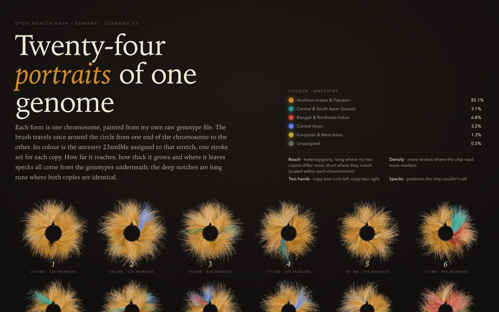
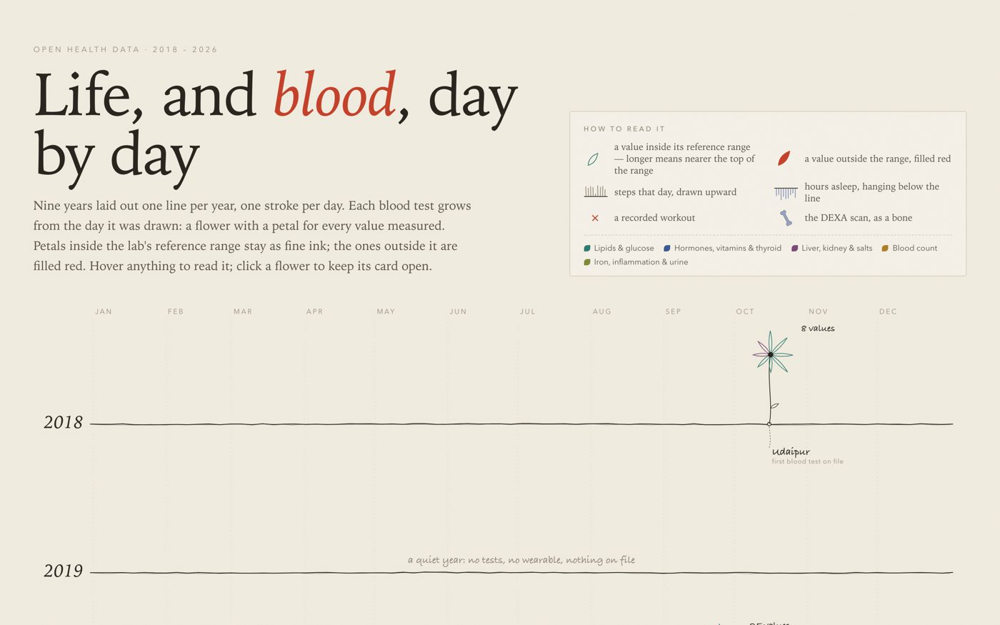
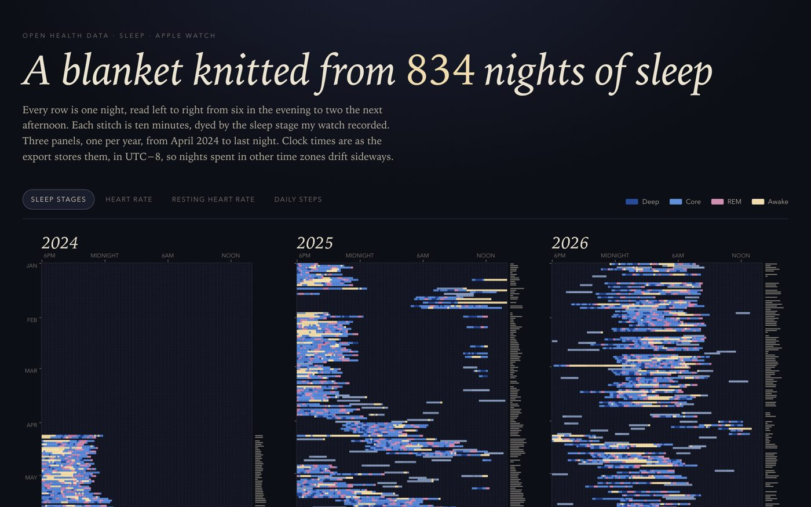

Watch on YouTube · Download the MP4
For eight years my health data sat in separate places: a 23andMe genotype file, an Apple Watch export, a DEXA report, and blood test PDFs from four labs in India and Canada. I had never looked at most of it.
So I put it all in one folder, parsed it on my laptop and drew three pictures from it. Each one is an interactive page. Hover anything to read the number underneath.

Each chromosome is one brush stroke around a circle, coloured by the ancestry 23andMe assigned to that stretch. Its reach and thickness come from about 630,000 markers on the v5 chip, binned into 2-megabase windows.

One line per year, one stroke per day. Each blood test grows as a flower with a petal for every value; red petals mark values outside the lab's range. 211 values from six panels, with steps, sleep and workouts along the line.

One row per night, one stitch per ten minutes, dyed by the sleep stage my watch recorded. Switch the weave to heart rate, resting heart rate or daily steps.
Each page is a single HTML file that makes no network requests. The data sits inside it. You can also download it as JSON:
genome.json: marker counts per 2 Mb window for each chromosome, and ancestry segmentsblood-and-days.json: every lab value with its reference range, the DEXA scan, and daily steps, sleep and workoutssleep.json: sleep stages in ten-minute steps, overnight heart rate, resting heart rate and stepsI removed date of birth, health card numbers and lab IDs from the reports, along with individual genetic variants, workout routes and other location data. No one else's records are here. A place shows up on the timeline only where a lab or scan puts me there.
A small Python script turns the parsed exports into SVG and canvas drawings. I made the video in code with Remotion from captures of the pages, and generated the music with ElevenLabs.